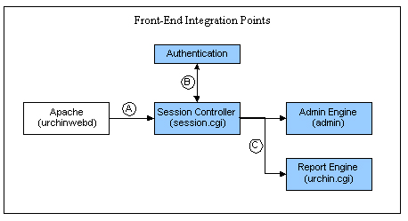

Urchin 整合功能總覽
簡介
Urchin 前端是以模組化的元件和業界標準技術為基礎，可讓管理員將 Urchin 報告存取權限整合至現有的或計劃中的基礎結構。為了實現我們對代管供應商和資料中心的承諾，我們測試和支援三個整合點，以確保能將 Urchin 整合至大部分的架構中。
下列圖表說明 Urchin 前端的主要元件以及三個整合點。此系統同時提供網頁式的管理和報告功能。

Urchin 系統的所有內容是由安裝為 "urchinwebd " 的 Apache 伺服器所提供，如圖表左側所示。Apache 伺服器會處理要求，並使用 CGI 介面將其傳送到「工作階段控制器」應用程式 (session.cgi)。「工作階段控制器」會執行驗證，並視情況將要求傳送給「管理員引擎」(管理員) 或「Urchin 報告引擎」(urchin.cgi)。內嵌工作階段識別碼的內容則會傳回給使用者。
標示為 "A"、"B" 和 "C" 的三個點就是先前提及的三個整合點。點 "A" 允許管理員取代或略過 Urchin 伺服器。點 "B" 允許外部驗證或無需驗證。點 "C" 則允許透過包裝函式或入口網站直接存取報告。
點 A：網頁伺服器整合
許多代管公司可能已經有執行中的網頁伺服器，或在其系統中執行一種經過特殊編譯的網頁伺服器。只要網頁伺服器提供基本的 CGI 作業，就可以將 Apache 二進位格式檔替換掉，或是使用現有的網頁伺服器來提供 Urchin 的存取權限。
這個整合點可以維持 Urchin 系統的完整性。Urchin 介面將用來管理、驗證和傳送報告。使用者和設定檔都必須在 Urchin 系統中進行設定，如此一來，當使用者進入系統時，Urchin 就會知道他們可以存取哪些報告。
點 B：外部驗證或略過驗證程序
複雜的代管環境通常採用現有的集中式控制來驗證使用者，例如 LDAP。只要對組態進行一項簡單的變更，「工作階段控制器」就可以呼叫您選擇的驗證常式。系統會提供簡單的介面，以傳回登入成功或失敗的資訊。您可輕易地包裝現有的驗證常式，以便為這兩個系統提供正確的架構。在點 "B" 使用整合功能時，也可以使用虛設常式來略過驗證，然後直接連結至到達網頁。
透過點 "B" 使用整合功能時，除了驗證程序是由外部應用程式所執行以外，整體 Urchin 系統會維持不變。使用者和設定檔都必須在 Urchin 系統中進行設定，如此一來，當使用者進入系統時，Urchin 就會知道他們可以存取哪些報告。如需使用外部驗證之介面的完整資訊以及如何略過驗證的範例，請參閱 使用外部驗證或略過驗證程序。
點 C：從包裝函式或入口網站直接連結至報告
我們有許多客戶僅使用一個網站，並希望從特定網站的管理區域直接連至該網站的報告。此區域通常都受驗證保護。點 C 整合可讓使用者輕鬆透過包裝函式指令碼或是現有的入口網站直接連結到報告。在此情況下，使用者會略過 Urchin 驗證和初始報告選擇畫面，直接連至 Urchin 報告。
透過點 "C" 使用整合功能時，我們假設服務供應商可以透過一對一關係或現有的組態資料庫來控制使用者有權檢視的內容。您仍然必須設定 Urchin 才能產生「設定檔」報告，但此設定在管理介面之內或之外都可以自動化。如果管理介面中的「直接報告連結」已啟用，Urchin 也提供透過特定網址直接連結至 Urchin 報告的功能。Urchin 報告的存取權是透過 .report.conf 檔案進行管理，該檔案內嵌於由此網址指定的目錄中。
就複雜的入口網站整合而言，Urchin 報告引擎會傳送工作階段和其他入口網站變數，以便讓工作階段繼續運作。